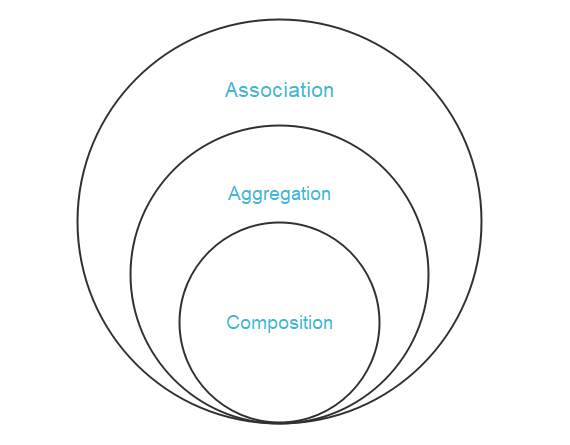

POO Avanzada en Java
¡Hola, futuros cracks del desarrollo! En el tema anterior, pusimos los cimientos de la Programación Orientada a Objetos (POO). Aprendimos a pensar en "objetos", esas pequeñas cápsulas de superpoderes (datos y comportamientos) que son la base de casi todo el software moderno. Ahora, vamos a construir sobre esos cimientos para levantar un rascacielos.
Piensa en lo que hemos hecho hasta ahora como aprender a fabricar ladrillos (objetos). Cada ladrillo es útil, pero su verdadero poder se desata cuando los combinamos para construir algo más grande. En este tema, aprenderemos las técnicas de los maestros constructores de software: cómo relacionar esos ladrillos, cómo crear "ladrillos base" reutilizables y cómo hacer que distintas piezas encajen de manera flexible.
Hablaremos de Herencia, que es como tener un molde maestro para crear nuevos tipos de ladrillos con características ya definidas. Exploraremos la Composición, que es como construir una pared uniendo distintos ladrillos, cada uno con su función. Y nos sumergiremos en el Polimorfismo, la magia que permite tratar distintos tipos de ladrillos como si fueran el mismo, haciendo nuestro código increíblemente flexible. ¿Listos para pasar de artesanos a arquitectos de software? ¡Vamos a ello!
Herencia: El ADN del Código
La herencia es uno de los pilares fundamentales de la Programación Orientada a Objetos. Es el mecanismo que nos permite definir una nueva clase a partir de otra ya existente. La nueva clase, que llamamos clase hija o subclase, "hereda" las características (atributos y métodos) de la clase existente, a la que nos referimos como clase padre o superclase.
Definición: Herencia
Es una relación de tipo "es un/a". Permite que una clase (subclase) adquiera las propiedades y comportamientos (métodos) de otra clase (superclase). Piensa en ello como la genética del mundo real: heredas rasgos de tus padres (color de ojos, altura), pero también tienes tus propias características únicas que te definen. En POO, un Coche es un Vehiculo, un Perro es un Animal.
La idea principal detrás de la herencia no es complicar los programas, sino todo lo contrario: simplificarlos al máximo. Su gran ventaja es la reutilización de código. No tenemos que escribir las mismas propiedades y métodos una y otra vez para clases similares. Definimos lo común en la clase padre y las clases hijas solo se preocupan de añadir o modificar lo que las hace especiales. Este proceso se conoce como especialización.
Una clase derivada puede ser a su vez clase padre de otra, dando lugar a una jerarquía de clases, como un árbol genealógico.
Sintaxis de la Herencia
En Java, para indicar que una clase hereda de otra, utilizamos la palabra clave extends.
// Sintaxis formal de la herencia
[modificador] class NombreClasePadre {
// ... miembros de la clase padre ...
}
[modificador] class NombreClaseHija extends NombreClasePadre {
// ... miembros adicionales de la clase hija ...
}
Acceso a Miembros Heredados y Modificadores
Una clase hija hereda todos los miembros public y protected de su clase padre. Sin embargo, ¿qué pasa con los private?
private: Los miembros privados de la clase padre también son heredados, pero la clase hija no puede acceder a ellos directamente. Siguen existiendo en el objeto hijo y pueden ser manipulados a través de métodos públicos o protegidos del padre que la hija sí hereda.public: Son heredados y totalmente accesibles desde la clase hija y desde cualquier otro lugar.protected: Este es el modificador de acceso clave para la herencia. Los miembrosprotectedson como losprivate, pero con una excepción: son accesibles directamente por las clases hijas.
Cuándo usar protected
Usa protected para atributos o métodos que no quieres que sean públicos para todo el mundo, pero que necesitas que las clases que hereden de la tuya puedan acceder y modificar directamente. Es el puente entre el encapsulamiento estricto (private) y la visibilidad total (public).
| Modificador | Misma Clase | Mismo Paquete | Subclase | Otro Paquete |
|---|---|---|---|---|
public |
Sí | Sí | Sí | Sí |
protected |
Sí | Sí | Sí | No |
| (sin modificador) | Sí | Sí | No | No |
private |
Sí | No | No | No |
Ejemplo 1: Jerarquía de Vehículos
Vamos a modelar una jerarquía simple. Todos los vehículos tienen una marca y un modelo. Un Coche es un vehículo, pero añade el número de puertas.
// Clase Padre o Superclase
public class Vehiculo {
protected String marca;
protected String modelo;
public Vehiculo(String marca, String modelo) {
this.marca = marca;
this.modelo = modelo;
}
public void arrancar() {
System.out.println("El vehículo ha arrancado.");
}
public String getInfo() {
return "Marca: " + marca + ", Modelo: " + modelo;
}
}
// Clase Hija o Subclase
public class Coche extends Vehiculo {
private int numeroPuertas;
public Coche(String marca, String modelo, int numeroPuertas) {
// La primera línea DEBE ser la llamada al constructor de la clase padre.
super(marca, modelo);
this.numeroPuertas = numeroPuertas;
}
// Sobrescribimos el método arrancar para especializar el comportamiento.
// La anotación @Override le dice al compilador que nuestra intención es sobrescribir.
// Es una buena práctica que previene errores.
@Override
public void arrancar() {
System.out.println("El coche " + marca + " " + modelo + " ha arrancado.");
}
// Añadimos un método propio de Coche
public void tocarClaxon() {
System.out.println("¡Beep, beep!");
}
// Sobrescribimos y AMPLIAMOS la funcionalidad del padre usando 'super'
@Override
public String getInfo() {
return super.getInfo() + ", Puertas: " + numeroPuertas;
}
}
La palabra super
super es tu "teléfono" para comunicarte con la clase padre desde la clase hija. Tiene dos usos principales:
1. super(...): Como función, llama al constructor de la clase padre. Debe ser la primerísima instrucción en el constructor de la clase hija.
2. super.miembro: Como objeto, te permite acceder a un método o atributo de la clase padre, especialmente útil cuando has sobrescrito un método y quieres invocar la implementación original del padre.
Ejemplo 2: Jerarquía de Personas
Imaginemos una aplicación para un instituto. Tanto Alumno como Profesor son, fundamentalmente, Persona.
public class Persona {
protected String nombre;
protected String nif;
public Persona(String nombre, String nif) {
this.nombre = nombre;
this.nif = nif;
}
public void fichar() {
System.out.println(nombre + " ha fichado en el sistema.");
}
}
public class Alumno extends Persona {
private String curso;
public Alumno(String nombre, String nif, String curso) {
super(nombre, nif);
this.curso = curso;
}
public void estudiar() {
System.out.println(nombre + " está estudiando para el curso " + curso + ".");
}
}
public class Profesor extends Persona {
private String departamento;
public Profesor(String nombre, String nif, String departamento) {
super(nombre, nif);
this.departamento = departamento;
}
// Especialización del método fichar
@Override
public void fichar() {
System.out.println("El profesor " + nombre + " del departamento de " + departamento + " ha fichado.");
}
}
classDiagram
class Persona {
# String nombre
# String nif
+fichar()
}
class Alumno {
- String curso
+estudiar()
}
class Profesor {
- String departamento
+fichar()
}
Persona <|-- Alumno
Persona <|-- ProfesorReflexiona
- Imagina que necesitas una clase
Directorque también es unaPersona. ¿Heredaría dePersonao deProfesor? Justifica tu decisión. - En el ejemplo de
Persona, ¿qué pasaría si el constructor dePersonano recibiera parámetros (public Persona())? ¿Sería necesario llamar asuper()en los constructores deAlumnoyProfesor? - ¿Se puede heredar de varias clases en Java? Por ejemplo,
class AlumnoDeportista extends Alumno, Deportista. Investiga por qué sí o por qué no. - Si un método en la clase padre está declarado como
final, ¿puede una clase hija sobrescribirlo con@Override? Prueba a hacerlo y analiza el resultado.
Composición: Construyendo con Bloques de LEGO
Si la herencia crea una relación "es un/a", la composición crea una relación "tiene un/a" o "es parte de". Es una de las técnicas más potentes y flexibles del diseño de software. En lugar de que una clase herede de otra, una clase contiene una o más instancias de otras clases como atributos para construir una funcionalidad más compleja.
Definición: Composición
Es un principio de diseño donde una clase (la "compuesta") se construye utilizando objetos de otras clases (los "componentes"). La clase compuesta delega parte de su trabajo a sus componentes. Piensa en un coche: un Coche tiene un Motor, tiene Ruedas, tiene una Carroceria. El coche no es un motor, sino que usa un motor para funcionar.
Esta es la alternativa a la herencia y, de hecho, uno de los principios más famosos del diseño de software es "Favorecer la composición sobre la herencia". ¿Por qué? Porque produce sistemas más flexibles, con un acoplamiento más bajo entre clases, lo que los hace más fáciles de mantener y modificar.
Sintaxis de la Composición
No hay una palabra clave especial como extends. La composición se implementa simplemente declarando atributos en una clase cuyo tipo es otra clase.
// Sintaxis formal de la composición
public class Componente {
// ...
}
public class Compuesto {
// La clase Compuesto "tiene un" Componente
private Componente miComponente;
public Compuesto() {
this.miComponente = new Componente(); // Una forma de hacerlo
}
public void algunaOperacion() {
// La clase Compuesto delega el trabajo al componente
miComponente.hacerAlgo();
}
}
Inyección de Dependencias: La Forma Correcta de Componer
Aunque en el ejemplo anterior creamos el Componente dentro de la clase Compuesto, una práctica mucho mejor es recibirlo desde fuera, a través del constructor. Esto se llama Inyección de Dependencias.
Inyección de Dependencias (DI)
Es un patrón de diseño en el que un objeto recibe sus dependencias (los otros objetos con los que trabaja) desde una fuente externa, en lugar de crearlas él mismo. Esto desacopla las clases y hace que el código sea mucho más fácil de probar y reutilizar. ¡Es una de las técnicas más importantes en el software moderno!
Ejemplo 1: El Coche y su Motor (Revisitado)
Un coche no es un motor, sino que tiene uno. Usando composición e inyección de dependencias, el diseño es mucho más robusto.
// Interfaz que define el "contrato" de un motor
public interface Motor {
void encender();
void apagar();
}
// Implementaciones concretas del Motor
public class MotorGasolina implements Motor {
@Override
public void encender() { System.out.println("Motor de gasolina encendido. Vroom vroom!"); }
@Override
public void apagar() { System.out.println("Motor de gasolina apagado."); }
}
public class MotorElectrico implements Motor {
@Override
public void encender() { System.out.println("Motor eléctrico activado. Silencio..."); }
@Override
public void apagar() { System.out.println("Motor eléctrico desactivado."); }
}
// La clase Coche "compone" o "tiene un" Motor, y lo recibe por el constructor
public class Coche {
private String marca;
private String modelo;
private Motor motor; // Composición: Coche "tiene un" Motor
// Inyección de Dependencias: el Coche no sabe cómo se crea el motor, solo lo recibe.
public Coche(String marca, String modelo, Motor motor) {
this.marca = marca;
this.modelo = modelo;
this.motor = motor;
}
public void arrancar() {
System.out.println("Arrancando el " + marca + " " + modelo + "...");
motor.encender(); // Delega la acción al objeto compuesto
}
}
// Uso
Motor motorTesla = new MotorElectrico();
Coche modelS = new Coche("Tesla", "Model S", motorTesla);
modelS.arrancar();
Motor motorFord = new MotorGasolina();
Coche focus = new Coche("Ford", "Focus", motorFord);
focus.arrancar();
Coche puede funcionar con cualquier tipo de motor, siempre que cumpla con la interfaz Motor.
Herencia vs. Composición
| Característica | Herencia ("es un/a") | Composición ("tiene un/a") |
|---|---|---|
| Acoplamiento | Fuerte. La subclase está íntimamente ligada a la implementación de la superclase. | Débil. La clase contenedora solo conoce la interfaz pública de sus componentes. |
| Flexibilidad | Baja. La relación se establece en tiempo de compilación. No puedes cambiar la superclase de un objeto en tiempo de ejecución. | Alta. Puedes cambiar los componentes en tiempo de ejecución, permitiendo comportamientos dinámicos. |
| Múltiples... | No. En Java, solo se puede heredar de una clase (herencia simple). | Sí. Una clase puede "tener" múltiples objetos de distintas clases. |
| Principal Uso | Reutilizar código y establecer una jerarquía de tipos para el polimorfismo. | Reutilizar código y construir objetos complejos a partir de piezas más simples y desacopladas. |
Reflexiona
- Piensa en una clase
PC. ¿Qué componentes tendría? ¿CPU,RAM,DiscoDuro? Modela esta relación usando composición. ¿Usarías interfaces para los componentes? ¿Por qué? - "Favorecer la composición sobre la herencia". Explica esta frase con un ejemplo. ¿Significa que nunca debemos usar la herencia?
- ¿Qué es el "acoplamiento" en programación? ¿Por qué un acoplamiento débil (loose coupling) es deseable?
- Imagina que estás construyendo una aplicación de edición de vídeo. Un
ProyectoVideo"tiene una"LineaDeTiempo, y unaLineaDeTiempo"tiene varios"Clips. Dibuja un diagrama de clases simple usando Mermaid que represente estas relaciones de composición.
Relaciones entre Clases: Asociación, Agregación y Composición

Asociación, Agregación y Composición
{kind=link}
Clases Abstractas: El Boceto del Artista
A veces, queremos crear una clase base que sirva como una plantilla, pero que por sí misma no tenga sentido instanciar. Por ejemplo, ¿qué es un "Vehículo" genérico? No puedes comprar "un vehículo", compras un "coche", una "moto", etc. Para estos casos, Java nos ofrece las clases abstractas.
Definición: Clase Abstracta
Es una clase que no puede ser instanciada directamente (no puedes hacer new de ella). Funciona como un "boceto" o plantilla para sus subclases. Puede contener tanto métodos concretos (con implementación, que se heredan tal cual) como métodos abstractos (sin implementación). Las clases hijas están obligadas a implementar todos los métodos abstractos de la clase padre.
Se usan para:
* Compartir código y estado común entre un grupo de clases estrechamente relacionadas.
* Definir un "contrato" que las clases hijas deben cumplir, forzándolas a implementar ciertos comportamientos, pero dejando la puerta abierta a compartir otros.
Sintaxis de Clases y Métodos Abstractos
Se declaran con la palabra clave abstract. Un método abstracto solo tiene la firma, sin las llaves {} del cuerpo.
// Sintaxis formal
public abstract class MiClaseAbstracta {
protected int atributoComun;
// Un constructor, que será llamado por las subclases
public MiClaseAbstracta(int valor) {
this.atributoComun = valor;
}
// Un método abstracto (sin cuerpo, termina en punto y coma)
public abstract void hacerAlgoEspecifico();
// Un método concreto (con cuerpo), que las subclases heredan
public void hacerAlgoComun() {
System.out.println("Esto es algo que todas las clases hijas pueden hacer.");
}
}
Reglas de las Clases Abstractas
- No se puede crear una instancia de una clase abstracta con
new. - Si una clase contiene uno o más métodos abstractos, la clase debe ser declarada
abstract. - Si una clase hereda de una clase abstracta, debe implementar todos los métodos abstractos de su padre, o bien, la clase hija también debe ser declarada
abstract.
Ejemplo 1: Figuras Geométricas (versión definitiva)
Nuestro ejemplo de Figura es el candidato perfecto. No tiene sentido crear una Figura genérica, y queremos obligar a todas las subclases a que definan cómo se calcula su area.
public abstract class Figura {
protected String color;
public Figura(String color) {
this.color = color;
}
// Método abstracto: obliga a las subclases a definir cómo calcular su área.
public abstract double getArea();
// Método concreto: compartido por todas las subclases.
public String getColor() {
return color;
}
}
public class Circulo extends Figura {
private double radio;
public Circulo(String color, double radio) {
super(color);
this.radio = radio;
}
// Implementación obligatoria del método abstracto
@Override
public double getArea() {
return Math.PI * radio * radio;
}
}
// Si intentamos esto, el compilador dará un error:
// Figura miFigura = new Figura("Rojo"); // ERROR: 'Figura' is abstract; cannot be instantiated
Ejemplo 2: Empleados de una Empresa
En una empresa, todos los empleados comparten atributos como nombre e id, pero la forma de calcularSalario es específica de cada rol.
public abstract class Empleado {
protected String nombre;
protected String id;
public Empleado(String nombre, String id) {
this.nombre = nombre;
this.id = id;
}
// Método abstracto: cada tipo de empleado calculará su salario de forma distinta.
public abstract double calcularSalario();
// Método concreto: todos los empleados tienen un nombre.
public String getNombre() {
return nombre;
}
}
public class Programador extends Empleado {
private double salarioBase;
private int horasExtra;
public Programador(String nombre, String id, double salarioBase) {
super(nombre, id);
this.salarioBase = salarioBase;
this.horasExtra = 0;
}
public void registrarHorasExtra(int horas) {
this.horasExtra = horas;
}
@Override
public double calcularSalario() {
// Fórmula específica para programadores
return salarioBase + (horasExtra * 40.0);
}
}
classDiagram
class Empleado {
<<abstract>>
# String nombre
# String id
+calcularSalario()*
+getNombre()
}
class Programador {
-double salarioBase
-int horasExtra
+calcularSalario()
+registrarHorasExtra()
}
Empleado <|-- ProgramadorReflexiona
- ¿Cuál es la diferencia fundamental entre un método abstracto y un método concreto en una clase abstracta?
- Si una clase
Gerentehereda deEmpleadopero no implementacalcularSalario(), ¿qué debe hacer el programador para que el código compile? - ¿Podría una clase abstracta no tener ningún método abstracto? Si es así, ¿qué utilidad tendría declararla como
abstract? - Diseña una jerarquía con una clase abstracta
Animaly dos subclasesPerroyGato. ¿Qué métodos serían abstractos y cuáles concretos enAnimal?
Interfaces: El Contrato de Funcionalidad
Mientras que una clase abstracta define lo que un objeto es y comparte un estado base, una interfaz define una capacidad o un comportamiento que un objeto puede hacer, sin importar qué es. Es un contrato 100% puro.
Definición: Interfaz
Una interfaz es una colección de métodos abstractos y, opcionalmente, constantes. Una clase que implements (implementa) una interfaz se compromete a proporcionar una implementación para todos los métodos de esa interfaz. Es un contrato de comportamiento. No define cómo se hacen las cosas, solo qué cosas se deben poder hacer.
La ventaja más poderosa de las interfaces es que una clase puede implementar múltiples interfaces, lo que permite una flexibilidad enorme en el diseño. Esto soluciona la falta de "herencia múltiple" de clases en Java.
Sintaxis de la Interfaz
Se declaran con la palabra clave interface. Las clases que la usan, utilizan implements.
// Sintaxis formal de la interfaz
public interface MiInterfaz {
// Constante (public static final por defecto)
String MI_CONSTANTE = "VALOR";
// Método abstracto (public abstract por defecto)
void hacerAlgo();
}
// Una clase puede implementar una o varias interfaces
public class MiClase implements MiInterfaz, OtraInterfaz {
@Override
public void hacerAlgo() {
// ... implementación obligatoria ...
}
// ... implementación de los métodos de OtraInterfaz ...
}
Clase Abstracta vs. Interfaz
Esta es una de las preguntas de entrevista más comunes, ¡así que presta atención!
| Característica | Clase Abstracta | Interfaz |
|---|---|---|
| Relación | "es un/a" (Is-A). Modela una jerarquía de tipos. | "puede hacer" (Can-Do). Modela una capacidad o comportamiento. |
| Herencia Múltiple | No (una clase solo puede extends una superclase). |
Sí (una clase puede implements múltiples interfaces). |
| Constructores | Sí, puede tener. Son llamados por las subclases. | No, no puede tener constructores. |
| Atributos (Campos) | Puede tener cualquier tipo de atributo (de instancia, estáticos, final, etc.). | Solo constantes (public static final por defecto). |
| Métodos | Puede tener métodos abstractos y métodos con implementación (concretos). | Principalmente métodos abstractos. Desde Java 8, también puede tener default (con implementación) y static methods. |
| Cuándo usar | Cuando quieres compartir código y estado (atributos) entre clases muy relacionadas. |
Cuando quieres definir un contrato de comportamiento que clases no relacionadas pueden compartir. |
Ejemplo 1: Objetos "Voladores"
Un pájaro, un avión y un superhéroe pueden volar, pero no tienen una relación de herencia común. Lo que comparten es la capacidad de volar.
public interface Volador {
void despegar();
void volar();
void aterrizar();
}
public class Pajaro implements Volador {
@Override
public void despegar() { System.out.println("El pájaro bate sus alas para despegar."); }
@Override
public void volar() { System.out.println("El pájaro planea en el cielo."); }
@Override
public void aterrizar() { System.out.println("El pájaro busca una rama para aterrizar."); }
}
public class Avion implements Volador {
@Override
public void despegar() { System.out.println("El avión acelera en la pista y despega."); }
@Override
public void volar() { System.out.println("El avión vuela a 10,000 metros de altura."); }
@Override
public void aterrizar() { System.out.println("El avión despliega el tren de aterrizaje."); }
}
Ejemplo 2: Comparable para Ordenar
Java nos proporciona interfaces muy útiles en su librería estándar. Comparable permite que los objetos de una clase definan su propio "orden natural", para que Collections.sort() sepa cómo ordenarlos.
// Hacemos que la clase Alumno implemente la interfaz Comparable
public class Alumno implements Comparable<Alumno> {
private String nombre;
private int nota;
// ... Constructor y getters ...
// Implementamos el único método de la interfaz: compareTo
// Este método define el orden natural de los Alumnos (por nota, de mayor a menor).
@Override
public int compareTo(Alumno otro) {
// Devuelve < 0 si este objeto va antes que 'otro'
// Devuelve 0 si son iguales en orden
// Devuelve > 0 si este objeto va después que 'otro'
return Integer.compare(otro.nota, this.nota); // Orden descendente por nota
}
}
// Uso:
List<Alumno> clase = new ArrayList<>();
clase.add(new Alumno("Ana", 8));
clase.add(new Alumno("Luis", 5));
clase.add(new Alumno("Juan", 10));
Collections.sort(clase); // Funciona porque Alumno es Comparable
System.out.println(clase);
// Salida: [Alumno [nombre=Juan, nota=10], Alumno [nombre=Ana, nota=8], Alumno [nombre=Luis, nota=5]]
Reflexiona
- Crea una interfaz llamada
Almacenablecon dos métodos:guardarEnFichero(String ruta)yleerDeFichero(String ruta). - Explica con tus palabras el "problema del diamante" que se da en lenguajes con herencia múltiple de clases y cómo Java lo evita.
- ¿Cuándo elegirías una clase abstracta en lugar de una interfaz? Proporciona un escenario concreto y justifica tu elección.
- Investiga la interfaz
Serializableen Java. ¿Para qué sirve? ¿Por qué es especial (pista: no tiene métodos)? Este tipo de interfaz se llama "interfaz marcadora".
Polimorfismo: Una Esencia, Múltiples Formas
El polimorfismo es, posiblemente, el concepto más poderoso que surge de la herencia y las interfaces. Es la habilidad de un objeto de presentarse de diferentes formas. Nos permite escribir código que opera con objetos de una superclase o interfaz, sin necesidad de conocer el tipo específico del objeto en tiempo de compilación.
Definición: Polimorfismo
Del griego "muchas formas". Es la capacidad de procesar objetos de diferentes tipos y clases a través de una única interfaz uniforme. En la práctica, significa que puedes tener una referencia de tipo padre (o interfaz) que apunta a un objeto de tipo hijo (o clase implementadora). Cuando llamas a un método a través de esa referencia, Java ejecutará la versión del método correspondiente al objeto real en memoria, no a la referencia.
Este mecanismo se conoce como vinculación tardía (late binding) o enlace dinámico, porque la decisión de qué código exacto ejecutar se toma en tiempo de ejecución, no en tiempo de compilación.
Ejemplo 1: La Orquesta Polimórfica
Imagina una orquesta. El director le dice a cada músico "toca", pero el sonido que se produce depende del instrumento que tenga el músico en sus manos.
// Clase base abstracta
public abstract class Instrumento {
private String nombre;
public Instrumento(String nombre) { this.nombre = nombre; }
public String getNombre() { return nombre; }
public abstract String tocar(); // Devuelve el sonido como un String
}
public class Violin extends Instrumento {
public Violin() { super("Violín"); }
@Override
public String tocar() { return "♪ Suena una melodía de violín ♫"; }
}
public class Trompeta extends Instrumento {
public Trompeta() { super("Trompeta"); }
@Override
public String tocar() { return "¡Suena una fanfarria de trompeta!"; }
}
// El director de orquesta usa el polimorfismo. No necesita saber
// qué instrumento es cada uno, solo que son "Instrumentos".
public class Orquesta {
public void iniciarConcierto(List<Instrumento> instrumentos) {
for (Instrumento i : instrumentos) {
// ¡Magia polimórfica aquí!
// Java determina en tiempo de ejecución qué método tocar() llamar.
System.out.println(i.getNombre() + ": " + i.tocar());
}
}
}
La llamada i.tocar() es polimórfica. i es de tipo Instrumento, pero en tiempo de ejecución, Java mira qué objeto real está almacenado en i (Violin o Trompeta) y llama al método tocar() de esa clase específica.
Ejemplo 2: Procesando Figuras de Forma Genérica
Podemos usar el polimorfismo para manejar una colección de figuras diferentes de manera uniforme, por ejemplo, para calcular el área total.
// Reutilizamos las clases abstractas Figura, Circulo y Rectangulo
public class CalculadoraDeAreas {
public double calcularAreaTotal(List<Figura> figuras) {
double areaTotal = 0.0;
for (Figura f : figuras) {
// No necesitamos saber si f es un Círculo o un Rectángulo.
// Simplemente llamamos a getArea(), y el polimorfismo se encarga
// de ejecutar la implementación correcta.
areaTotal += f.getArea();
}
return areaTotal;
}
}
// Uso
List<Figura> misFiguras = new ArrayList<>();
misFiguras.add(new Circulo("Rojo", 5.0)); // Área ≈ 78.54
misFiguras.add(new Rectangulo("Azul", 4.0, 6.0)); // Área = 24.0
CalculadoraDeAreas calc = new CalculadoraDeAreas();
System.out.println("Área total: " + calc.calcularAreaTotal(misFiguras)); // Área total: 102.54
sequenceDiagram
participant Cliente
participant Orquesta
participant Violin as v: Violin
participant Trompeta as t: Trompeta
Cliente->>Orquesta: iniciarConcierto([v, t])
Orquesta->>v: tocar()
Note over v: Ejecuta Violin.tocar()
v-->>Orquesta: (sonido de violín)
Orquesta->>t: tocar()
Note over t: Ejecuta Trompeta.tocar()
t-->>Orquesta: (sonido de trompeta)Cuidado con instanceof y el Downcasting
A veces, después de tratar un objeto de forma polimórfica, necesitas acceder a un método que solo existe en la clase hija. Para ello, debes hacer un "downcasting" (convertir la referencia del padre al tipo del hijo). Siempre debes comprobar el tipo con instanceof antes de hacer el casting para evitar una ClassCastException.
for (Vehiculo v : miGaraje) {
v.arrancar(); // Llamada polimórfica
if (v instanceof Coche) {
Coche c = (Coche) v; // Downcasting seguro
c.tocarClaxon();
}
}
instanceof puede ser una señal de que el diseño podría mejorarse, quizás moviendo más comportamiento a la clase base o a una interfaz.
Reflexiona
- En el ejemplo de la Orquesta, ¿qué pasaría si añadiéramos una nueva clase
Pianoque hereda deInstrumento? ¿Necesitaríamos cambiar algo en la claseOrquesta? ¿Por qué es esto una ventaja tan grande? - Explica con tus palabras qué es la "vinculación tardía" (late binding) y cómo se relaciona con el polimorfismo.
- ¿Se puede aplicar el polimorfismo con interfaces? Crea un pequeño ejemplo con la interfaz
Voladordonde una función reciba una lista deVoladory los hagadespegar(). - ¿Cuál es la diferencia entre sobrecarga de métodos (overloading) y sobrescritura de métodos (overriding)? ¿Cuál de los dos es un ejemplo de polimorfismo en tiempo de ejecución?
La clase Object en Java: El Ancestro Universal
En el gran árbol genealógico de Java, hay un ancestro común del que todos descienden. Es la clase Object. Si no indicas explícitamente que tu clase hereda de otra, Java asume silenciosamente que hereda de Object.
Definición: La Clase Object
Es la clase raíz de la jerarquía de clases en Java. Cada clase es descendiente, directa o indirecta, de Object. Esto garantiza que cada objeto en Java tenga un conjunto mínimo de funcionalidades comunes.
Esta característica tiene una implicación muy potente: una variable de tipo Object puede contener una referencia a cualquier tipo de objeto en Java, desde un String hasta un Coche o un ArrayList.
Métodos Fundamentales de Object
Todo objeto en Java hereda un conjunto de métodos de Object. Aunque hay varios, hay tres que son absolutamente cruciales para entender y que, como desarrollador, sobrescribirás constantemente.
| Método | Descripción | ¿Por qué sobrescribirlo? |
|---|---|---|
toString() |
Devuelve una representación en String del objeto. Por defecto, es horrible: el nombre de la clase + @ + el hashcode del objeto en hexadecimal (ej: com.miempresa.Punto@15db9742). |
Para proporcionar una representación legible y útil del estado de tu objeto (ej: "Punto[x=10, y=20]"). Es invaluable para depuración y logging. |
equals(Object obj) |
Compara si dos objetos son "iguales". Por defecto, solo devuelve true si las dos referencias apuntan al mismo objeto en memoria (identidad, lo mismo que ==). |
Para definir tu propia lógica de "igualdad de contenido" o "igualdad lógica" (ej: dos objetos Alumno son iguales si tienen el mismo DNI, aunque sean instancias distintas). |
hashCode() |
Devuelve un valor int (código hash) que representa al objeto. |
Contrato equals-hashCode: Si sobrescribes equals(), DEBES sobrescribir hashCode(). La regla es: si a.equals(b) es true, entonces a.hashCode() debe ser igual a b.hashCode(). Es absolutamente esencial para el funcionamiento correcto de colecciones basadas en hash como HashSet y HashMap. |
Ejemplo Práctico: Sobrescribiendo equals, hashCode y toString
Vamos a crear una clase Punto y a implementar correctamente estos tres métodos. Es una práctica estándar que tu IDE (IntelliJ, Eclipse) puede generar automáticamente por ti.
import java.util.Objects;
public final class Punto { // 'final' porque es una buena práctica para clases inmutables
private final int x;
private final int y;
public Punto(int x, int y) {
this.x = x;
this.y = y;
}
// Sobrescritura de toString() para una representación clara y útil
@Override
public String toString() {
return "Punto[x=" + x + ", y=" + y + "]";
}
// Sobrescritura de hashCode()
// Es crucial para que colecciones como HashSet funcionen correctamente.
// Usamos Objects.hash() (desde Java 7+) que es la forma moderna y segura
// de generar un buen hash a partir de los campos relevantes.
@Override
public int hashCode() {
return Objects.hash(x, y);
}
// Sobrescritura de equals() para comparar por contenido (estado)
@Override
public boolean equals(Object obj) {
// 1. Optimización: ¿Son la misma referencia en memoria? Son idénticos.
if (this == obj) return true;
// 2. Comprobación de tipo: ¿Es el otro nulo o de una clase diferente? No pueden ser iguales.
if (obj == null || getClass() != obj.getClass()) return false;
// 3. Hacemos el casting (ahora es seguro) y comparamos los campos relevantes.
Punto punto = (Punto) obj;
return x == punto.x && y == punto.y;
}
}
// Uso:
Punto p1 = new Punto(10, 20);
Punto p2 = new Punto(10, 20);
Punto p3 = p1; // p3 es solo otra referencia al mismo objeto que p1
System.out.println("p1.toString(): " + p1); // Llama a nuestro toString() -> Punto[x=10, y=20]
System.out.println("p1 == p2: " + (p1 == p2)); // false -> son dos objetos distintos en memoria
System.out.println("p1 == p3: " + (p1 == p3)); // true -> apuntan al mismo objeto
System.out.println("p1.equals(p2): " + p1.equals(p2)); // true -> gracias a nuestro `equals()` que compara contenido
¡El Contrato equals-hashCode es Sagrado!
Romper el contrato entre equals() y hashCode() es una de las fuentes de bugs más sutiles y difíciles de encontrar en Java. Si dos objetos son iguales según equals(), DEBEN tener el mismo hashCode. Si no lo haces, al meterlos en un HashSet o usarlos como clave en un HashMap, ¡puedes "perder" objetos que creías haber guardado!
Reflexiona
- Si no hubiéramos sobrescrito el método
equals()en la clasePunto, ¿qué imprimiríap1.equals(p2)y por qué? - Crea una clase
Libroconisbn(String),titulo(String) yautor(String). ImplementaequalsyhashCodede forma que dos libros se consideren iguales si suisbnes el mismo. - Investiga el método
clone()de la claseObject. ¿Para qué sirve y por qué su uso se considera a menudo una mala práctica en el Java moderno? ¿Qué alternativas (como un "constructor de copia") son preferibles? - ¿Por qué la implementación por defecto de
hashCode()no es útil cuando sobrescribesequals()? ¿Qué podría pasar si dos objetos iguales tuvieran hash codes diferentes al usarlos en unHashMap?
Aplicación en el Mundo Real
Estos conceptos no son solo teoría académica; son el pan de cada día en el desarrollo de software profesional.
-
Frameworks como Spring: Utilizan masivamente la Inyección de Dependencias y las Interfaces para lograr un bajo acoplamiento. Tú defines un "contrato" (una interfaz, como
UsuarioRepository) y Spring se encarga de "inyectar" la implementación concreta (UsuarioRepositoryImpl) donde la necesites. Esto hace que el código sea increíblemente modular y fácil de testear. -
Desarrollo de Videojuegos: La Herencia y el Polimorfismo son fundamentales. Puedes tener una clase base
Enemigocon un métodoatacar(). Luego, creas subclases comoOrco,DragonyEsqueleto. Cada uno implementaatacar()de forma diferente. El motor del juego simplemente puede tener una lista deEnemigos y llamar aatacar()en cada uno, sin preocuparse del tipo específico. -
APIs Gráficas (UI Toolkits): En JavaFX o Swing, casi todos los componentes visuales (botones, etiquetas, paneles) heredan de una clase base común (como
NodeoComponent). Esto permite tratarlos de forma polimórfica: puedes tener una colección deComponents y aplicarles operaciones comunes, como cambiar su visibilidad o color. - Procesamiento de Datos: Imagina que tienes que procesar diferentes tipos de ficheros (
CSV,JSON,XML). Puedes definir una interfazProcesadorFicherocon un métodoprocesar(). Luego, creas una clase para cada tipo de fichero que implemente esa interfaz. Tu código principal solo necesitará una lista deProcesadorFicheroy llamará aprocesar()en cada uno, sin importarle los detalles de cada formato.
Para Saber Más
- Documentación Oficial de Oracle sobre Herencia: The Java™ Tutorials - Inheritance - La fuente principal y más fiable para entender los fundamentos directamente del creador.
- Effective Java (libro de Joshua Bloch): Específicamente, los ítems sobre "Favorecer la composición sobre la herencia" (Item 18) y "Obedecer siempre el contrato general al sobrescribir equals" (Item 10) y "Sobrescribir siempre hashCode cuando sobrescribes equals" (Item 11). Es considerado la biblia de las buenas prácticas en Java.
- Baeldung: Abstract Class vs. Interface: Using an Interface vs. Abstract Class in Java - Un excelente artículo que profundiza en cuándo usar una u otra, con ejemplos claros y cubriendo las características modernas de Java.